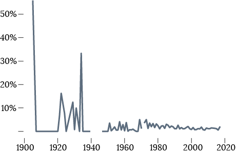
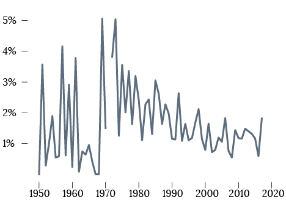
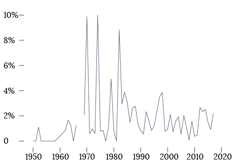
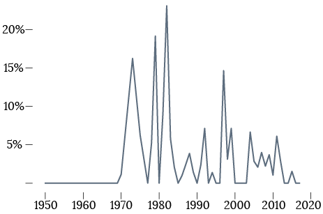

Calculated Risk
BY Jessica McKenzie
Published August 16, 2018
Brief history of Himalayan expeditions TK
Most common causes of death on Himalayan expeditions
Includes “Disappeared” but excludes “Unknown,” “Other,” and “Unspecified”
SOURCE: The Himalayan Database
The number of deaths each year went up drastically in the latter half of the 20th century, presumably because fewer of the world's climbers were getting killed on the front lines of global conflicts, and as climbing gained popularity and became an accessible hobby for a greater number of people.
Deaths per year, 1905 - 2017
Excludes years without data
SOURCE: The Himalayan Database
However, even though the number of deaths has approached 35 in a single year on several occasions, on the whole, climbing in the Himalayas has become less dangerous. The death rate (total annual deaths divided by total expedition members that year) has gone down from the first half of the 20th century and the earlier days of Himalayan mountaineering. When Himalayan mountaineering was still new, it wasn't unusual to see years in which 10, 30, or 50 percent of the climbers perished, but now the rate fluctuates between one to five percent.
Death rate, 1905 - 2017
Excludes years without data
Death rate, 1950 - 2017
Excludes years without data
SOURCE: The Himalayan Database
Defining “Deadliest”
By the most obvious metric—the number of people who have died on a single peak—Everest is far and away the deadliest mountain.
Deaths, by mountain peak
SOURCE: The Himalayan Database
As the tallest mountain in the world, Everest is the most popular mountain to climb in the Himalayan range. Officials have described "traffic jams" on the mountain due to the crowds trying to summit during the brief climbing season. More people means more deaths, inevitably. But it is not the most technically challenging of the Himalayan peaks, and when determining the “most deadly” mountain, many want to take into account how many people have attempted to summit, or how many successful summits there have been.
Death rate on Everest, 1950 - 2017
Excludes years without data
Death rate on Annapurna, 1950 - 2017
Excludes years without data
SOURCE: The Himalayan Database
Annapurna is often cited as the most dangerous Himalayan mountain. Only 261 people have summitted—including hired guides—while 71 have perished in the attempt.
But some of the single most deadly expeditions have been to other peaks. In 1994, 9 Germans, a Swiss national and a Nepalese mountain guide were found 6091 meters below Pisang Peak, thought to have been killed by a snowslide.
Member deaths per expedition
Does not include hired guides
SOURCE: The Himalayan Database
The deadliest expedition in the Himalayan Database was in 2005, a French expedition to Kang Guru. All seven members and 11 of 12 hired staff were swept away by an avalanche while at base camp.
Total deaths per expedition
SOURCE: The Himalayan Database